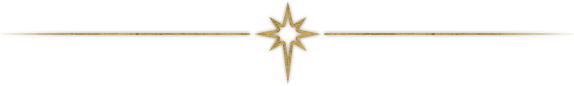
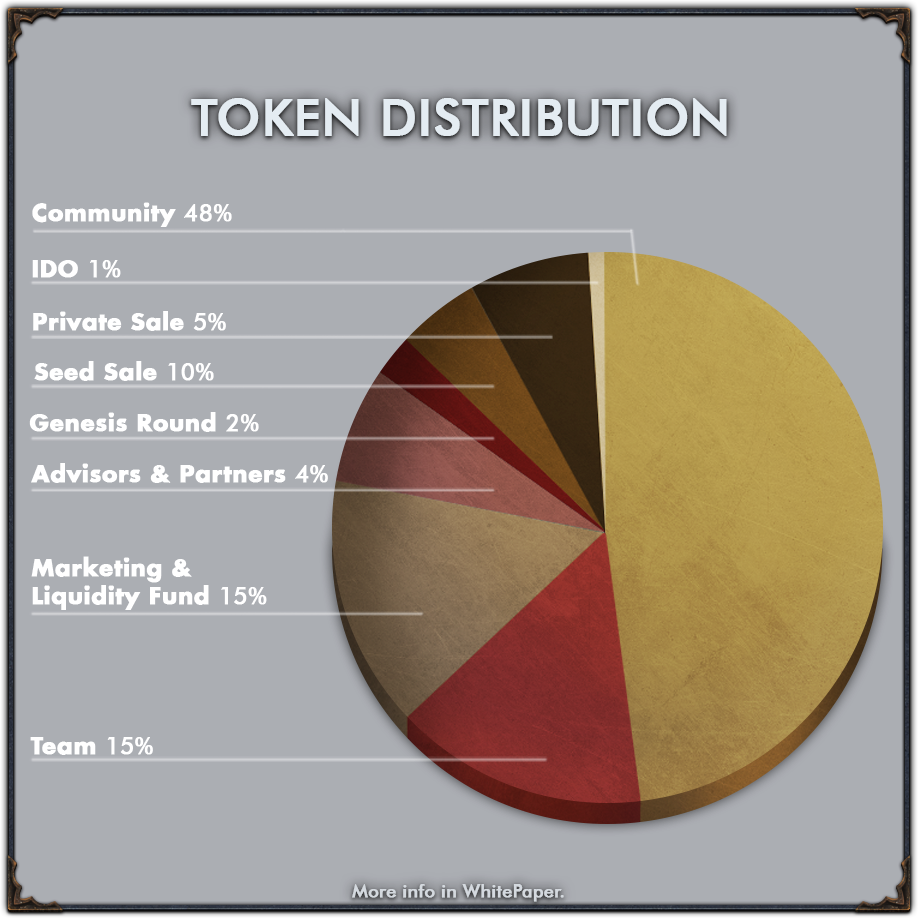

DEVELOPMENT
NFT COLLECTIONS

The overview of collections that awaits WarEden community before the game is released is
shown below.
After the release, all NFTs will be created from the game itself with a great playtime effort required. The
free gear mint will be considered as a marketing activity to spread the word of WarEden.
Once the game is alive, all players will start the journey with their
characters with the
lowest tier gear sets.
All who owned pre-realease NFTs will be immediately and undoubtedly recognized as the top tier character.
We truly belive that NFTs should not give a combat adventage in order to avoid pay to win, as
well as to fairly reward the most skilled players.
$WE Token is the essence of the WarEden game enabling in-game value creation systems primarly
focusing on the
NFT creation process by WarEden chest. $WE token will have a limited supply of 1,000,000,000 Tokens.

The primary goal is to achieve the self-sustainability of the WarEden Ecosystem. The
accomplish so, the
core pillar of the value creating process is the fun of the game followed by the NFT's fundamental use-case
within the game.